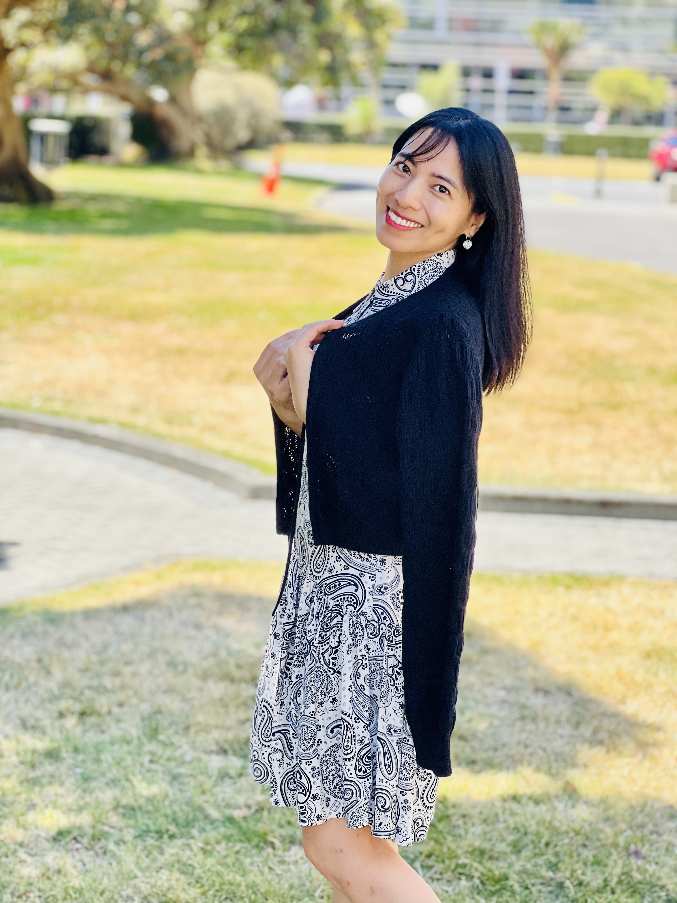

I study how climate policy and carbon markets interact with firms and financial markets, with a particular interest in research that can inform policy and real-world decision-making.

I am a PhD Candidate in Finance at Victoria University of Wellington, with a strong background in financial analysis, research, and applied problem-solving. My research focuses on climate finance, carbon markets, emissions trading schemes (ETS), climate regulation, and market behaviour, using quantitative methods and large financial and administrative datasets.
Alongside my research, I have experience in university teaching, stakeholder coordination, and academic administration, including coordinating across multiple stakeholders and supporting faculty leadership. My experience spans regulatory analysis, policy evaluation, and applied empirical research. I value intellectual curiosity, resilience, continuous learning, and collaboration, and enjoy turning rigorous analysis into clear insights that support policy and real-world decision-making.
Outside of work, I enjoy reading, writing, jogging, hiking, badminton, and dancing, as well as exploring different cultures and histories. I try to approach life with curiosity, optimism, and an open mind, and I enjoy new experiences that challenge me to learn, grow, and see the world from different perspectives.
This paper examines how mandatory climate-related disclosure regulation affects firms' cost of equity across New Zealand, the United Kingdom, and Japan. It distinguishes between comply-or-explain and full-compliance regimes and examines both direct effects on regulated firms and potential spillover effects on unregulated firms.
I am interested in connecting empirical research with policy and regulatory questions, particularly in climate policy, carbon markets, financial markets, and regulation.
Teaching and tutoring experience in Corporate Finance, Banking, and Finance.
Reflections on research, policy, books, learning, and life.
School of Economics and Finance
Victoria University of Wellington
Wellington, New Zealand
Email: van.nguyenthi@vuw.ac.nz
LinkedIn: Van Nguyen Thi